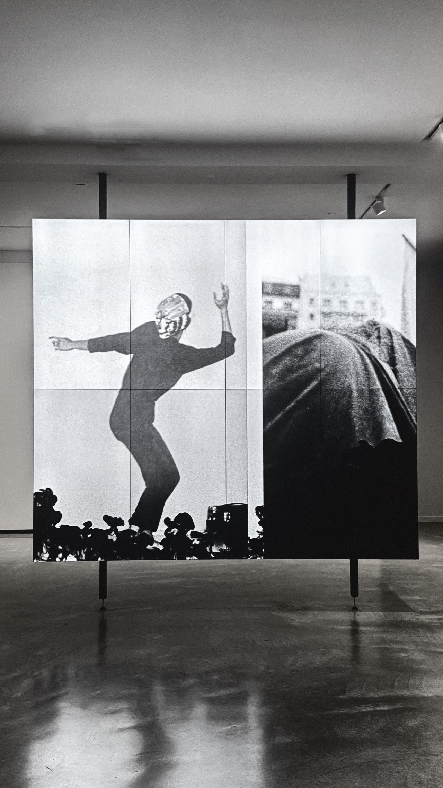

01 / The promise
In 2047, education no longer happens in classrooms. It is streamed, synchronized, and implanted.
The Mirror Moon neuro-learning chip, once created to support children with learning disorders, is now mandatory for all citizens.
At first, the chip promised equity. Now, it delivers uniformity.
This is the world I live in. And this is the story of how I started to resist.